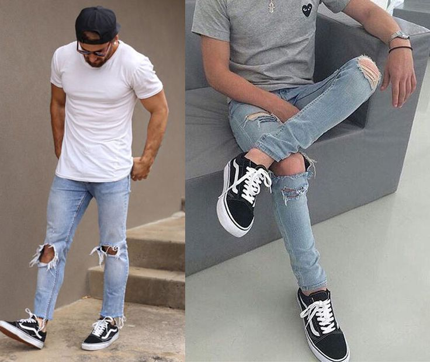
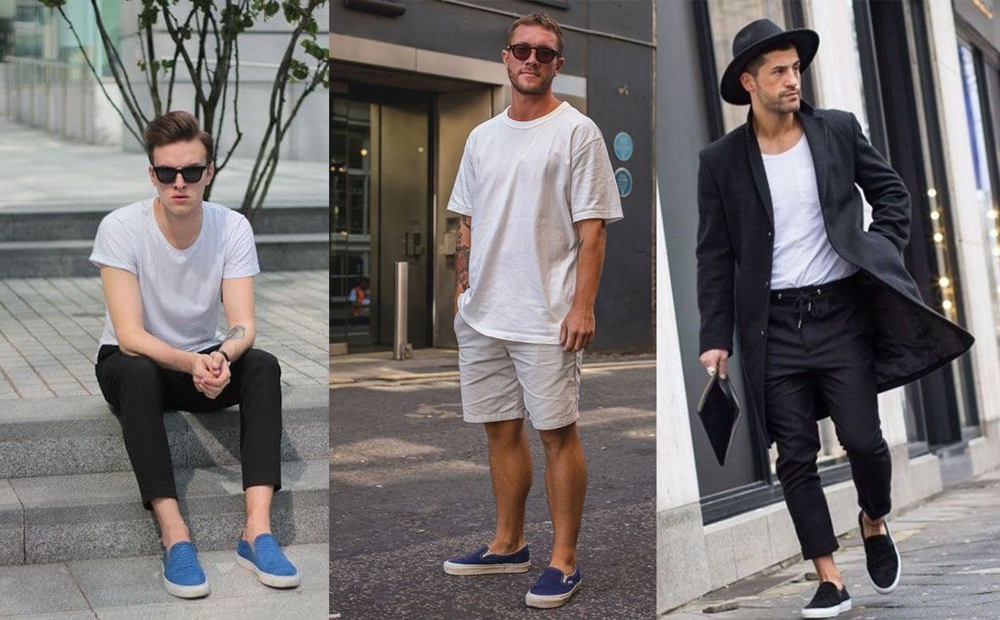

1. Sobre a DinizCrown
Tudo começou com uma paixão: vestir pessoas com estilo, personalidade e conforto. Hoje, a DinizCrown é mais que uma loja de roupas — é um espaço que conecta moda, inovação e sustentabilidade no cotidiano dos nossos clientes.

2. Nosso Propósito & Visão
Propósito: vestir confiança, inspirar autoestima.
Visão: ser referência em moda acessível e consciente, criando coleções que transformam e valorizam quem você é.
Assim como a Coca‑Cola busca uma diversidade de bebidas para refrescar o mundo, buscamos oferecer peças que atendam às necessidades e estilos de cada pessoa — com variedade, qualidade e atenção à sustentabilidade.
3. Portfólio e Estilo
Na DinizCrown, nossas coleções são versáteis, pensadas para diferentes ocasiões, do casual ao formal, do esportivo ao elegante. Inspirados pela abordagem da Coca‑Cola de
ser “uma empresa total de bebidas”
Coca-Cola
, oferecemos peças que transitam entre estilos, tamanhos e perfis de consumidores, com foco em diversidade e inclusão.


3. Portfólio e Estilo
Na DinizCrown, nossas coleções são versáteis, pensadas para diferentes ocasiões, do casual ao formal, do esportivo ao elegante. Inspirados pela abordagem da Coca‑Cola de
ser “uma empresa total de bebidas”
Coca-Cola
, oferecemos peças que transitam entre estilos, tamanhos e perfis de consumidores, com foco em diversidade e inclusão.
 2.png)
 1.png)